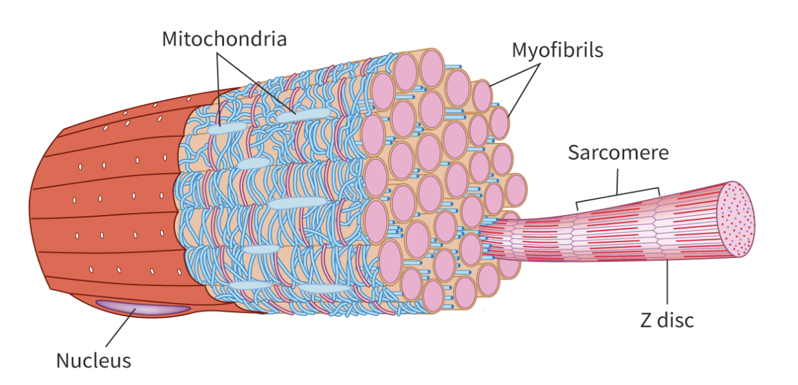
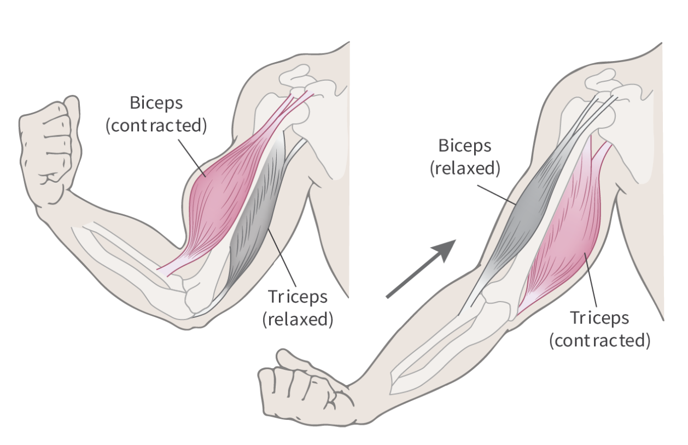
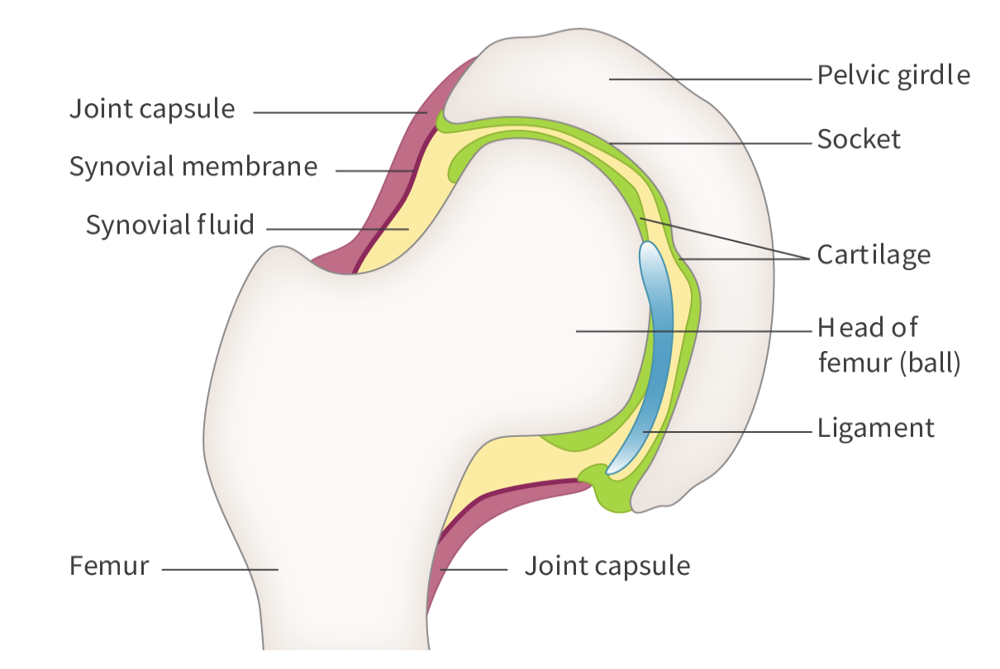

Structure of Skeletal Muscles
Skeletal Muscle (bigger) -> Myofibrils -> Sarcomeres (smaller)

Sarcomeres
Actin : I band, Thin Filaments
Myosin : A band, Thick Filaments
H zone : Contains only Myosin
M line : Centre of the sarcomere, Myosin only
Z discs : Boundaries of a sarcomer

Muscle Contraction
Key Terms: Sliding Filament Theory, Power Stroke, Cross-Bridge
Muscle Contraction Steps
- 1. Stimulated by nerve impulses, releases a neurotransmitter called acetylcholine.
- 2. Calcium ions release from sarcoplasmic reticulum to sarcoplasm.
- 3. Troponin bounded by calcium ions.
- 4. Troponin moves Tropomyosin away from blocking myosin binding sites.
- 5. Binding sites exposed, allowing myosin to bind to actin.

- 6. ATP is required, it binds to myosin head.
- 7. This causes myosin to detach from its binding site on actin.
- 8. ATP hydrolysed into ADP and Pi.
- 9. Myosin head changes position, moving toward the next binding site on actin.
- 10. Myosin attaches to the new binding site, forming a CROSS-BRIDGE.
- 11. Myosin head pulls actin filament toward the center by a process called POWER STROKE.
- 12. The Cycle repeated when ATP binds to myosin head, allowing it to detach from actin.
Role of Titin in muscle relaxation
Large Protein
Found inside the sarcomeres, connecting M-line and Z-discs.
Support and stabilize to the muscle fibres.
Act as a molecular spring, prevent damage from excessive strain.
Antagonistic Muscles
Work in opposite directions or have opposing effects.
ex: Biceps and Triceps
ex: Intercostal Muscle and Extercostal Muscle

Movement at a synovial joint
Synovial Joint: enclosed in a joint capsule, where bones are separated by a fluid-filled cavity, allowing free movement.
Synovial Fluid: Lubricant to reduce friction between bones.
Articular Cartilage: Cushsion to absorb shock.
Ligaments: Connective tissue, provide stability to the joint.
Tendon: Connect muscles to bones.
Ligaments, tendons and cartilage all contain collagen (protein).

Adaptations for swimming in marine mammals
Larger Lungs: take in more oxygen
Higher Volmes of blood: carry more oxygen
Streamlined Bodies: minimize drag, allow efficient movement
Thick Layer of Blubber: insulate cold water, provide buoyancy